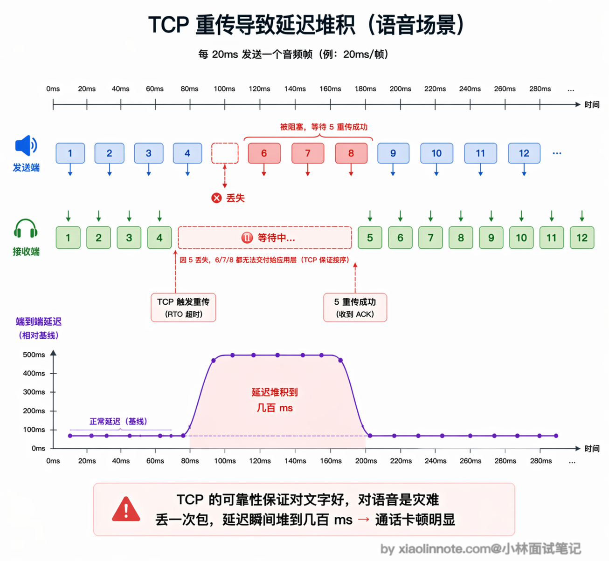
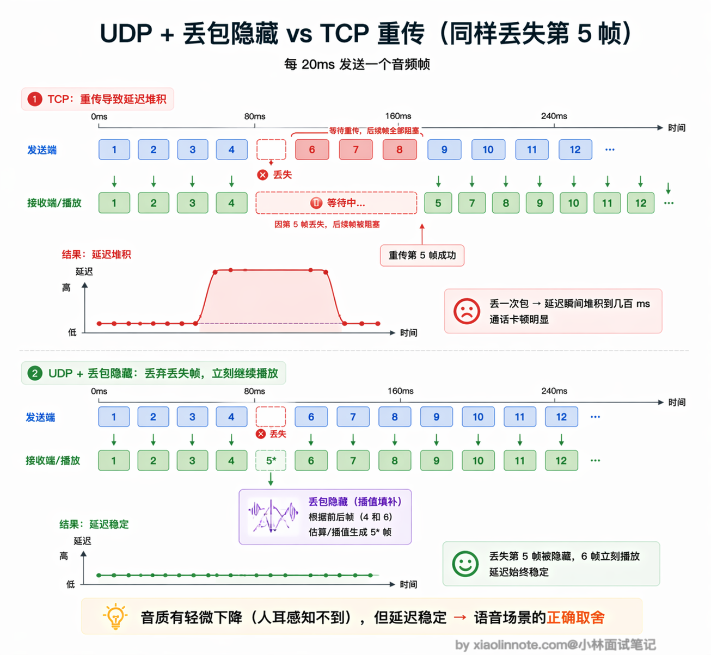
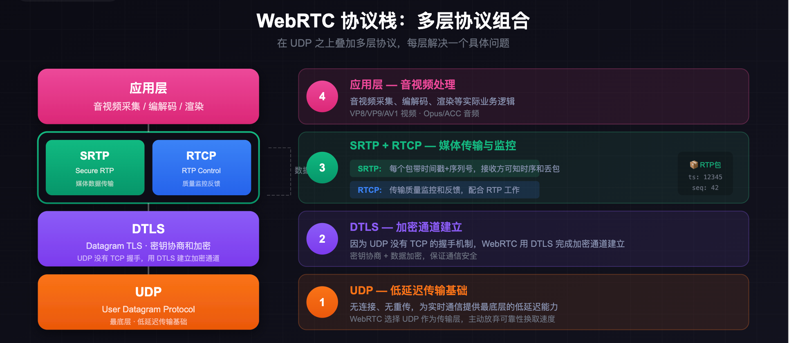
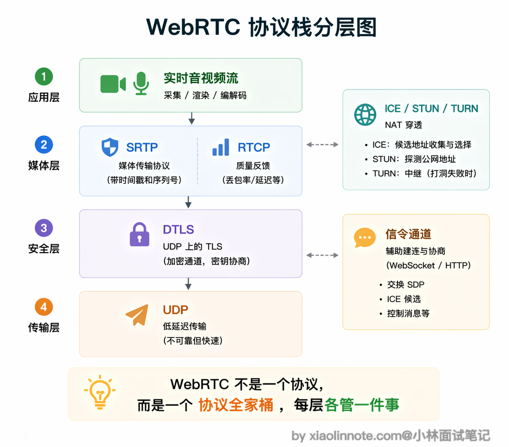
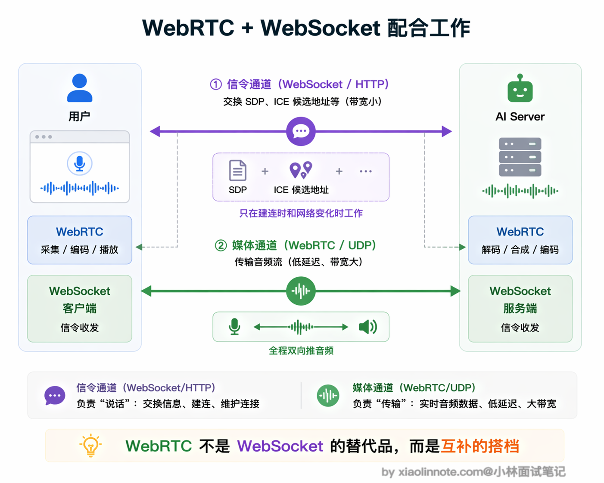
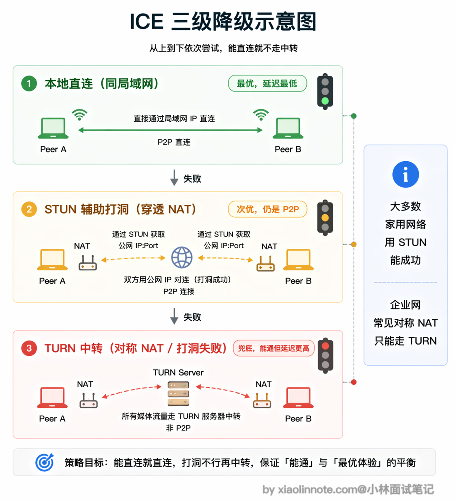
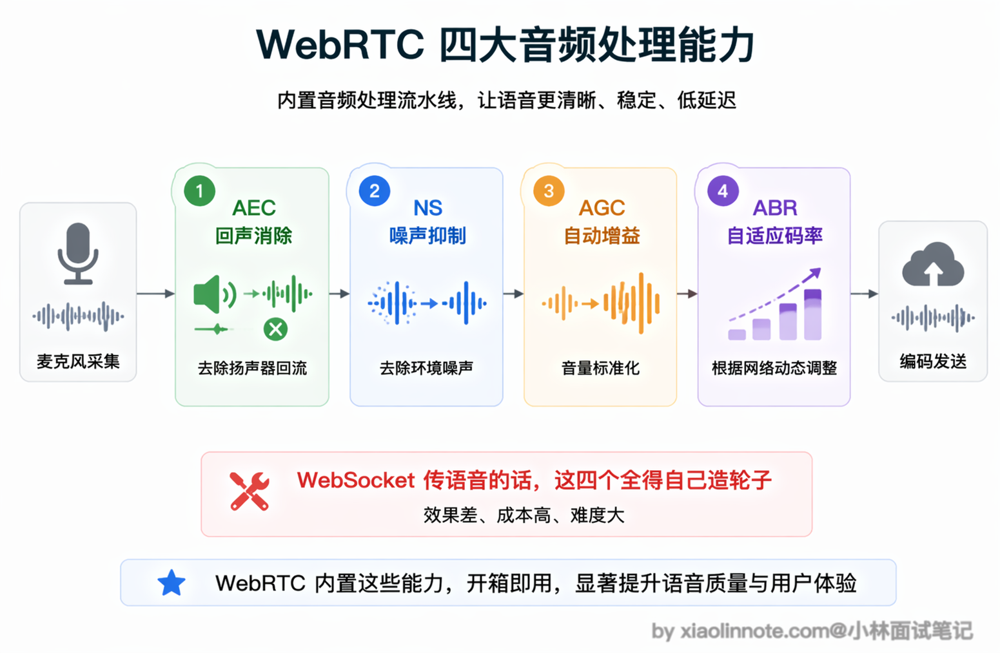
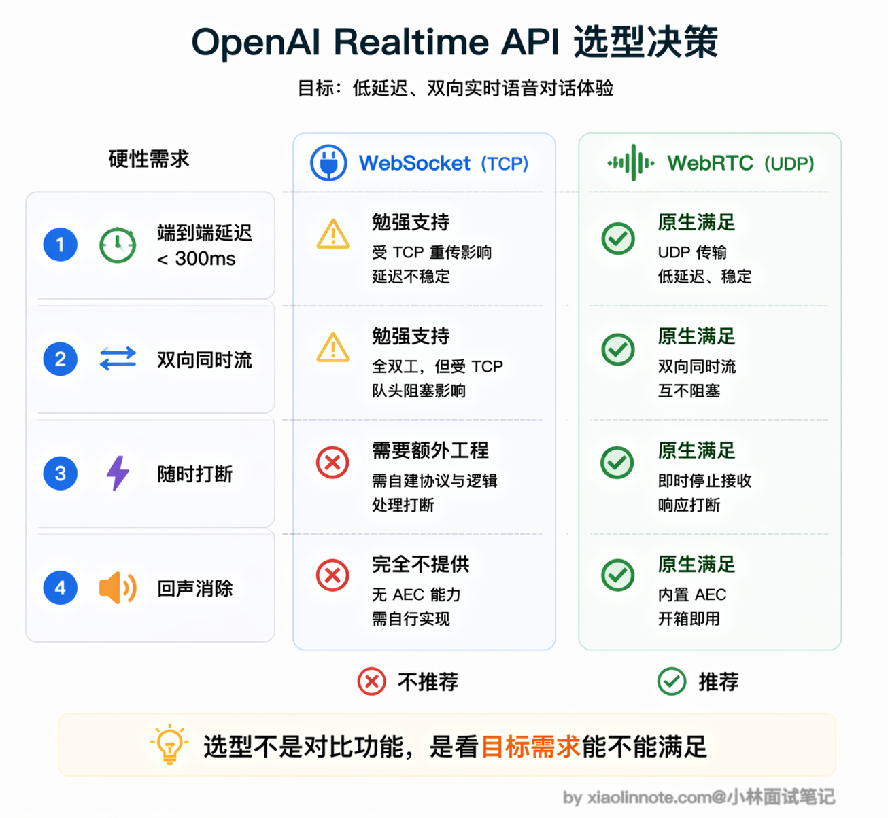

本篇目录
15. 为什么要用 WebRTC 协议？它和 WebSocket（WS）在 AI 对话流中的核心差异是什么？
👔面试官：为什么 AI 实时语音要用 WebRTC？它和 WebSocket 在 AI 对话流中的核心差异是什么？
🙋♂️我：WebRTC 主要是因为它支持点对点通信，延迟比较低。WebSocket 需要经过服务器中转，所以延迟高一些。不过两者都能传语音，差别不是很大。
👔面试官：你说的 P2P 只是 WebRTC 的一个特点，不是核心原因。关键问题是底层协议的区别，WebSocket 基于 TCP，WebRTC 基于 UDP，这两者对丢包的处理策略完全不同，你知道这意味着什么吗？
🙋♂️我：TCP 丢包会重传，UDP 不重传。但是 TCP 重传不是好事吗？能保证数据完整啊，语音也需要完整传输吧？
👔面试官：恰恰相反。语音场景里 TCP 的重传是灾难。丢了一个 20ms 的音频片段，TCP 强制等重传，后面所有音频全部堵住，延迟一堆积通话就卡死了。语音可以容忍丢包，但绝不容忍延迟。而且 WebRTC 不只是换了个传输协议，它还内置了回声消除、噪声抑制、自适应码率这些音频处理能力，这些用 WebSocket 全得自己造轮子。
原来语音和文字对网络的要求完全不同，下面我就从这个根本差异出发，把 WebRTC 和 WebSocket 的核心区别讲透。
💡 简要回答
我理解核心原因是 WebSocket 基于 TCP，而 TCP 的可靠性设计在实时语音场景里反而是负担。
语音可以容忍丢包，但绝对不容忍延迟；一旦网络抖动丢了包，TCP 强制等重传，后续所有音频都得跟着等，延迟一堆积通话就卡。
WebRTC 走的是 UDP，丢包了不等重传，直接用插值算法填补，用一点点音质损失换来稳定的低延迟，延迟能控制在 50 到 150 毫秒。
另外 WebRTC 还内置了回声消除、噪声抑制、自适应码率这些语音处理能力，这些用 WebSocket 都得自己实现。
所以 OpenAI Realtime API 这类实时语音产品选 WebRTC，就是因为 TCP 根本撑不住语音场景的延迟要求。
📝 详细解析
要理解为什么语音场景需要 WebRTC，得先想清楚一个问题：传输文字和传输语音，对网络的要求本质上是不同的。
传输文字时，你希望每个字符都能准确到达，顺序不能乱，丢一个字母整段话可能就不对了。所以 TCP 的可靠有序传输对文字来说是刚需，你愿意等网络重传，因为等来的是完整正确的内容。
传输语音时，情况完全反过来。人类大脑对语音时序极其敏感，当两个人对话时，超过 200ms 的延迟就会让人明显感觉到「卡顿」，超过 400ms 就会开始出现「说话串线」的尴尬：你以为对方说完了开口说话，结果对方话还没说完。

在这个场景里，丢掉一个 20ms 的音频小片段不是什么大事，人耳感知不到一小段静音；但为了等这 20ms 的片段重传，把后续所有音频都堵住，延迟积累到几百毫秒，体验就彻底崩了。语音容忍丢包，绝不容忍延迟，TCP 的设计哲学正好和这个需求相反。
WebSocket 底层是 TCP，所以它天然带着 TCP 的这个问题。用 WebSocket 传语音，每次网络轻微抖动导致丢包，TCP 就会触发重传等待，整条流的延迟都会随之堆积，不可避免。
WebRTC 的根本：选择 UDP，主动放弃可靠性
WebRTC 是 Google 主导开发、W3C 和 IETF 联合标准化的协议族，2011 年开始推进，最初目的就是让浏览器之间能直接做实时音视频通话，不需要安装任何插件。它最核心的设计决策是把底层从 TCP 换成 UDP。
UDP 完全不管可靠性，发出去的包丢了就丢了，没有重传，也没有等待。
这听起来很不可靠，但对语音来说恰恰是正确的选择。WebRTC 在 UDP 之上自己实现了一套对语音友好的丢包处理策略：当一个音频帧丢失时，不是等待重传，而是用「丢包隐藏（Packet Loss Concealment）」技术自动填补，用前后帧插值生成一段听起来合理的音频来替代，整体播放不中断，只是极短暂的音质轻微下降，人耳感知不到。

这是一个典型的工程权衡：用偶尔轻微的音质损失，换取稳定的低延迟。对语音通话而言，这是正确的取舍。
WebRTC 不是单一协议，而是一套协议组合
你可能以为 WebRTC 就是一个协议，跟 WebSocket 一样，换个名字而已。其实不是，WebRTC 更像是一套「协议全家桶」，在 UDP 之上叠加了好几层协议，每层各管一件事，组合在一起才能完成实时音视频通信。

最底层是 UDP，负责低延迟传输，这是整个 WebRTC 的地基。
UDP 上面跑的是 DTLS，负责密钥协商和加密。为什么需要单独搞一层加密呢？因为 UDP 不像 TCP 有现成的 TLS 握手机制，所以 WebRTC 用 DTLS（可以理解为「UDP 版的 TLS」）来完成加密通道的建立，保证音视频数据在传输过程中不会被窃听。
加密通道建好之后，媒体数据用 SRTP（Secure RTP）传输。
RTP 是专门为实时媒体设计的协议，每个包都带时间戳和序列号，接收方可以知道包的时序和是否有丢失，配合 RTCP 做传输质量的监控和反馈。你可以把 RTP 理解成「给每个音频包贴了标签」，接收方根据标签知道这个包应该排在哪里、前面有没有包丢了。
在连接建立阶段，WebRTC 使用 ICE（Interactive Connectivity Establishment）框架来处理 NAT 穿透，这是实际部署中最复杂的部分，后面单独解释。

SDP 信令：WebRTC 握手的「协商书」
WebRTC 建立连接前，双方需要互相告知对方自己的能力：支持哪些音视频编解码格式、网络地址是什么、加密参数是什么。这个协商过程通过 SDP（Session Description Protocol）来完成。
SDP 本身只是一种格式，不规定如何传输。双方需要通过一个「信令通道」来交换 SDP，这个信令通道可以是 WebSocket、HTTP 或者任何能双向传输的方式，WebRTC 不关心。这就是为什么用 WebRTC 做 AI 语音时，还是需要一个 WebSocket 连接：WebSocket 负责信令交换（告诉对方「我的网络地址是 xxx，我支持 Opus 编解码」），真正的音频流走 WebRTC 的 UDP 通道。两者各司其职，不是替代关系。

NAT 穿透：ICE/STUN/TURN 解决的问题
现实中大多数用户都在路由器后面，没有公网 IP，直接用内网地址互相连接是行不通的。WebRTC 用 ICE 框架来解决这个问题，ICE 会按优先级依次尝试三种连接方式：

第一优先级是本地直连，如果两个用户在同一个局域网里，直接用内网地址连，延迟最低。第二优先级是 STUN 辅助的 NAT 穿透，STUN 服务器帮助客户端发现自己的公网 IP 和端口，然后双方尝试「打洞」建立 P2P 连接，大多数家用路由器环境下这个方式能成功，延迟仍然很低。第三优先级是 TURN 中转，当 NAT 打洞失败时，流量通过 TURN 服务器中转，失去了 P2P 直连的延迟优势，但至少能通。
你可能会问，为什么有些情况下打洞会失败、非得走 TURN？
最常见的原因是「对称 NAT」：这类 NAT（常见于企业防火墙、某些运营商级 NAT）对每个目标地址都会分配一个不同的出口端口号，STUN 探测到的那个端口在对端尝试连进来时已经换了，打洞自然打不通。这时候只能退一步找一台双方都能访问到的中转服务器（TURN），把流量从一方送到服务器、再从服务器送到另一方。
这三层降级保证了 WebRTC 在各种网络环境下都能建立连接，只是在最差情况下退化成类似 WebSocket 经过服务器中转的模式。
WebRTC 内置的音频处理能力
WebRTC 不只是一个传输协议，它把多年来实时语音通信领域积累的工程经验都内置进去了，这是用 WebSocket 传语音最难补齐的部分。

回声消除（AEC）是其中最重要的一个。当你用扬声器外放 AI 的声音时，麦克风会同时把这段声音采集进去，如果不做处理，AI 就会听到自己说话的回声，形成反馈循环。WebRTC 内置了多年优化的回声消除算法，能实时识别并消除这部分回声，让对话不产生干扰。
噪声抑制（NS）解决环境噪声问题，比如用户在嘈杂的咖啡厅说话，WebRTC 会自动把背景噪声过滤掉，只传人声。自动增益控制（AGC）解决音量不稳定的问题，说话声音太小时自动放大，太大时自动降低，保证对方听到稳定的音量。
最后是自适应码率控制（ABR）：WebRTC 通过 RTCP 持续监测网络状况，动态调整音频比特率。网络好时用高码率保证音质，网络差时降低码率优先保证流畅，不会因为网络波动就直接卡死。这些能力组合在一起，才让 WebRTC 能在各种真实网络环境下维持可接受的通话质量。
OpenAI Realtime API 选择 WebRTC 的决策逻辑
OpenAI 在 2024 年发布了 Realtime API，用于实现实时语音对话：用户说话，AI 实时听，AI 说话，用户实时听，双方可以随时打断对方。
这个场景对技术方案的要求是非常苛刻的。首先，端到端延迟必须低于 300ms 才有自然的对话感，超过这个阈值用户就会明显感觉到「卡」。其次，语音必须双向同时流动，不能等一方说完再切换，这样才能实现自然的你一言我一语。再者，用户说话时必须能随时打断 AI 正在说的内容，不能让用户干等。最后还有回声消除的问题，麦克风采集的声音不能把 AI 正在播放的声音再传回去，否则会形成回声循环。
把这些要求综合起来看，TCP 系的方案（WebSocket）在网络抖动时达不到延迟要求，而且没有内置的音频处理能力，需要大量额外工程。WebRTC 天然满足所有这些要求，所以 Realtime API 选择了 WebRTC 作为媒体传输层。

WebSocket 和 WebRTC 的核心差异总结
| 维度 | WebSocket | WebRTC |
|---|---|---|
| 底层协议 | TCP | UDP |
| 连接模式 | 客户端 <-> 服务器 | P2P 直连（可降级为 TURN 中转） |
| 延迟 | 50-500ms（受 TCP 重传影响） | 50-150ms（UDP 不重传） |
| 丢包处理 | 强制重传，后续数据等待 | 丢包隐藏，插值填补，不阻塞 |
| 音视频支持 | 无，需自行实现全套处理链路 | 原生支持（编解码、AEC、NS、AGC、ABR） |
| 连接建立 | 简单，HTTP Upgrade 即可 | 复杂，需要信令交换 + ICE NAT 穿透 |
| 适合场景 | 文字/数据实时双向通信 | 实时音视频通话 |
| 实现复杂度 | 低 | 高（信令服务器、STUN/TURN 服务器都要自建或使用云服务） |
选型原则很清晰：文字对话用 SSE 或 WebSocket，实时语音用 WebRTC。WebRTC 的复杂度是真实存在的，信令服务器、STUN/TURN 服务器的部署和运维都需要成本，但这些复杂度换来的是无可替代的低延迟和音频质量，在 AI 语音助手这类产品里是值得付出的代价。
🎯 面试总结
回到开头踩的雷，最大的误区是觉得 WebSocket 和 WebRTC「都能传语音，差别不大」。
面试回答这道题，第一个必须说到的核心点是底层协议的区别：WebSocket 基于 TCP，WebRTC 基于 UDP。TCP 丢包强制重传，后续数据全部等待，延迟不可控；UDP 不重传，WebRTC 用丢包隐藏技术（插值填补）处理丢失的音频帧，用微小的音质损失换取稳定的低延迟。语音场景的铁律是「容忍丢包，绝不容忍延迟」，TCP 的设计哲学和这个需求正好相反。
第二个要点是 WebRTC 内置的音频处理能力。回声消除（AEC）、噪声抑制（NS）、自动增益控制（AGC）、自适应码率（ABR）这些都是 WebRTC 原生支持的，用 WebSocket 做语音这些全得自己造轮子，工程量巨大。这不只是传输协议的差异，而是一整套音视频工程能力的差异。
第三个加分点是 WebRTC 的连接建立机制：SDP 信令交换 + ICE/STUN/TURN NAT 穿透。特别是能说清楚「WebRTC 建连时仍然需要 WebSocket 做信令通道，两者是配合关系而不是替代关系」，会让面试官觉得你对整个架构有完整的理解。
对了，大模型面试题会在「公众号@小林面试笔记题」持续更新，林友们赶紧关注起来，别错过最新干货哦！